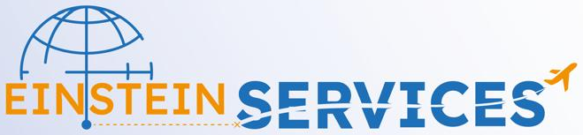
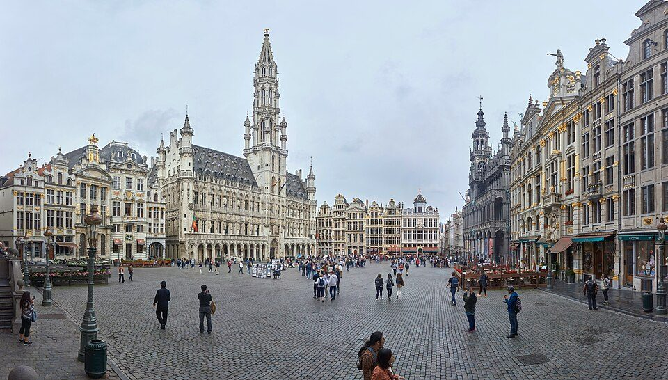
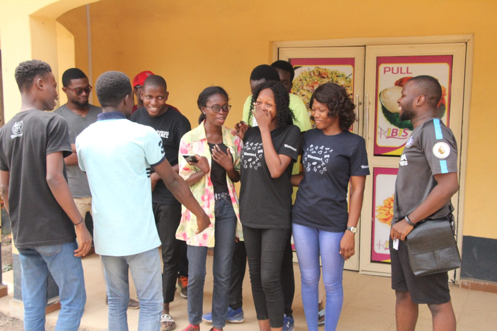

Orientation & formation
Faire le point sur votre profil, vos objectifs et votre choix de formation.

Études · Mobilité · Orientation
Yoff, Dakar · SénégalUn accompagnement humain et structuré pour préparer votre parcours d’études à l’international, de la première idée jusqu’au départ.
Un projet à la fois
Chaque parcours est différent. Nous vous aidons à comprendre les étapes, à organiser vos démarches et à identifier les services adaptés à votre situation.
Faire le point sur votre profil, vos objectifs et votre choix de formation.
Préparer vos dossiers et organiser les démarches d’admission.
Vous guider dans la préparation des pièces et des étapes de votre demande.
Vous informer sur les démarches de financement et les solutions avec nos partenaires.
Anticiper l’hébergement et les premières étapes pratiques de votre installation.
Préparer les réservations et les besoins liés à votre déplacement.
Choisir sa destination
Nous accompagnons les projets d’études vers cinq destinations. Le choix se construit selon votre profil, votre formation et les critères propres à chaque établissement.
Études & admissions
Parcours francophone & international

Formations supérieures
Projet d’études
Projet d’études
Un chemin en quatre temps
Comprendre votre parcours, vos objectifs et vos questions.
Explorer les formations et démarches cohérentes avec votre profil.
Organiser les candidatures et les pièces nécessaires, étape par étape.
Préparer le voyage et les premières étapes de l’installation.
Des informations compréhensibles pour vous aider à avancer en connaissance de cause.
Paroles d’étudiants
Quelques retours d’étudiants accompagnés par Einstein Services dans leurs démarches et leur projet de mobilité.

J’ai obtenu mon AVI avec Einstein Services, ce qui m’a permis d’obtenir mon visa. Je recommande fortement leurs services.
Einstein Services m’a accompagné pour obtenir une AVI en 48 heures. J’ai finalement obtenu mon visa pour étudier en France.
L’agence m’a accompagné tout au long de ma procédure et continue de m’orienter. L’équipe est fiable, transparente et honnête.
Parlons de votre projet
Adresse · Route de l’Aéroport, près de la Senelec, Yoff, Dakar
Téléphone · +221 33 830 54 60
WhatsApp · +221 78 387 62 62
Email · contact@einstein-services.com
Les témoignages rapportent des expériences individuelles et ne garantissent pas un résultat identique pour chaque dossier.
Crédits photos — Tour Eiffel : Jorge Royan (CC BY-SA 3.0) · Toronto : Jchmrt (CC BY-SA 4.0) · Bruxelles : Celuici (CC BY-SA 4.0) · Matterhorn : Dirk Beyer (CC BY-SA 3.0) · Rome : David Iliff (CC BY-SA 2.5) · Étudiants d’Ilorin : Haylad (CC BY-SA 4.0), Wikimedia Commons.